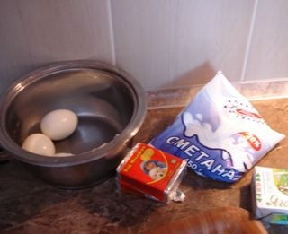
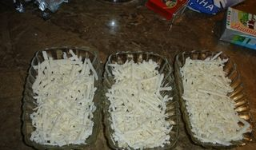
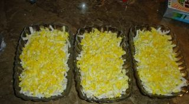
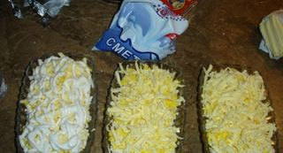

Шаг 1: Готовим салат «Снежная вьюга».

Как я уже говорила всё очень просто.
Ставим на средний огонь варить вкрутую яйца. После чего отправляем их под холодную воду и очищаем от скорлупы.

Нам понадобятся три порционных пиалы, куда мы сразу же натираем плавленый сырок.

Сверху трём на мелкой тёрке яйцо, а за ним – сливочное масло.

Поливаем всё сметаной и отправляем в холодильник хотя - бы на полчаса.